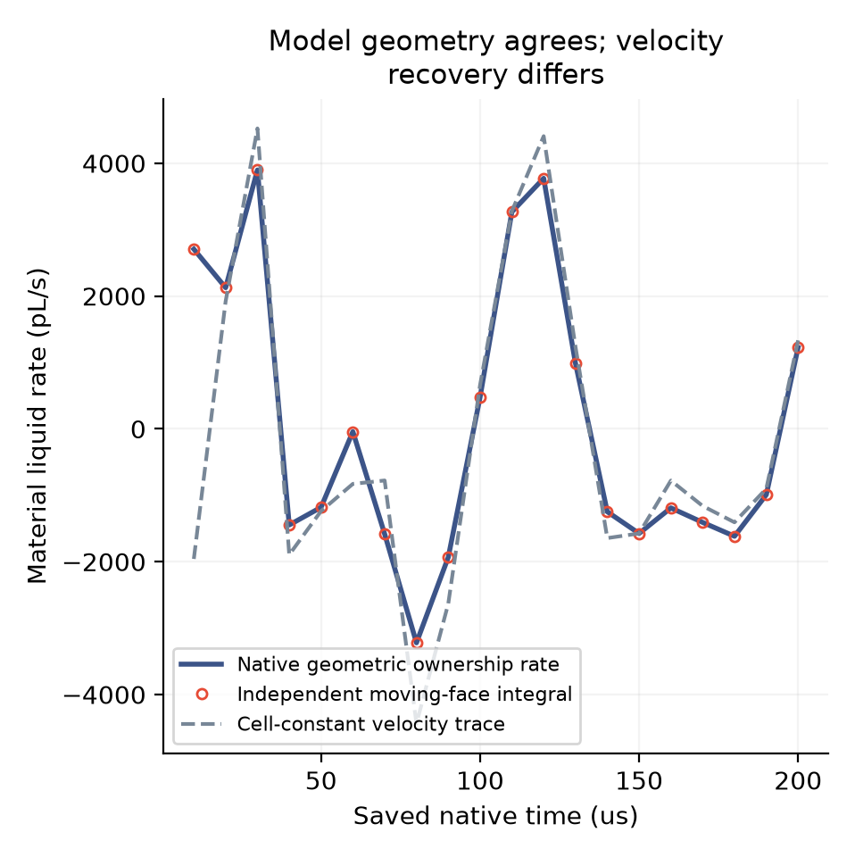
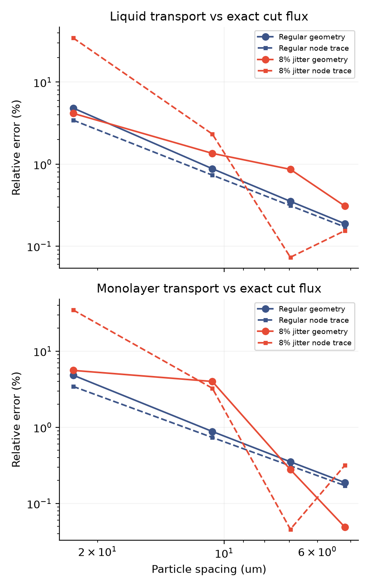
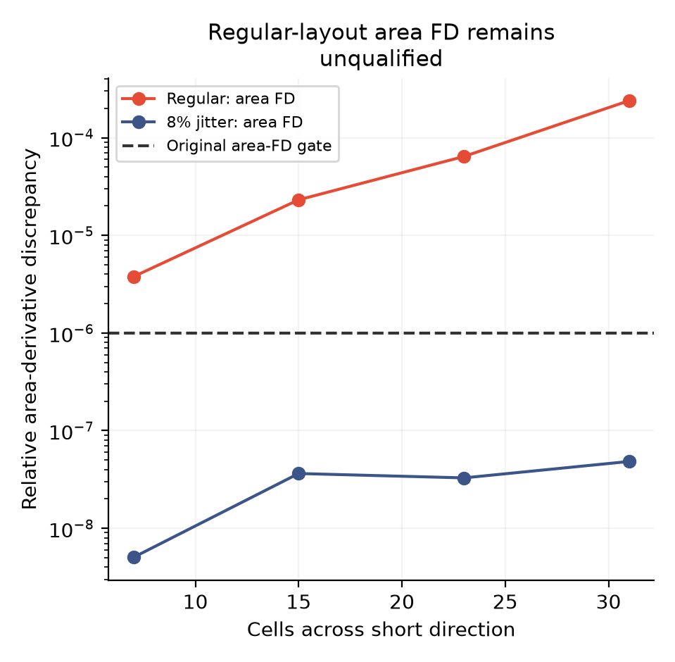

2026-11-13 · 从通量差异回到几何定义
账本里的材料交换，
怎样与移动单元对应？
01 · 粒子在动，单元边界也在变
粒子位置决定 Voronoi 单元的形状。粒子移动时，边界除了平移，还会因相邻粒子的相对运动而转动。因此，单元面速度需要额外的几何项；直接取粒子速度，得到的是另一种恢复方式。
我们保持原来的物理切面 x = 240 微米，用面速度计算单元面积、切面右侧面积和归属比例的变化，再沿每个实际力学位移积分。没有给模型增加拟合通量，也没有重跑排液轨迹。移动网格公式已有 AREPO 原始文献依据，本项目不把它作为新的发明。
02 · 同一模型几何量，独立计算对上了
8 个运动检查和 60 个实际保存步均通过。三个时间步组的液量／表活几何率相对 L2 差异约为 4×10⁻¹²、1.3×10⁻¹¹、1.1×10⁻¹⁰。这验证了当前几何实现的一致性；物理通量验证仍需单独完成。

此前约 55.66% 的材料通量差异仍保留。新检查说明，几何归属率可以独立复算；它并未把粒子速度恢复变成精确的物理基准，也没有证明差异只来自某一种原因。
03 · 再给它一道有解析通量答案的题
设置光滑、散度为零且四周静止的已知速度场，以及线性变化的正膜厚和低于饱和的表活密度。解析方程给出穿过固定切面的通量。比较规则／8% 扰动两种布局、四级粒子间距，并同时保留简单节点速度恢复作为对照。
最细一级的几何液量通量误差为 0.188%／0.308%，表活通量误差为 0.188%／0.049%。两种布局的直接通量比较均满足预先规定的最细 5% 和总体下降条件。

04 · 未通过项也必须列出来
四组扰动布局通过全部几何检查。四组规则布局的原生面积雅可比与面公式相符，固定切面归属的有限差分也通过；但辅助的面积有限差分与两级稳定性检查未达到原门槛。我们保留这些失败，因此整个制造解输运协议的状态仍是未全部通过。

| 短轴格数 | 布局 | 几何液量误差 | 几何表活误差 | 节点液量误差 | 全套几何检查 |
|---|---|---|---|---|---|
| 7 | 规则 | 4.829% | 4.829% | 3.438% | 未通过 |
| 15 | 规则 | 0.880% | 0.880% | 0.735% | 未通过 |
| 23 | 规则 | 0.352% | 0.352% | 0.312% | 未通过 |
| 31 | 规则 | 0.188% | 0.188% | 0.171% | 未通过 |
| 7 | 扰动 | 4.162% | 5.583% | 34.552% | 通过 |
| 15 | 扰动 | 1.354% | 3.995% | 2.329% | 通过 |
| 23 | 扰动 | 0.864% | 0.278% | 0.073% | 通过 |
| 31 | 扰动 | 0.308% | 0.049% | 0.155% | 通过 |
05 · 对原始排液计划的推进
现在有了两层分开的证据：实际模型的几何材料率可独立复算；已知瞬时输运场的直接通量比较随加密改善。下一步回到实际运动膜的空间差异，检查这些几何定义对膜厚、位移和接口通量的影响。
公式、失败记录、原始数据与复现
- 代码、数据来源与复现目录
- 公式、判据和范围 · 实际保存步检查协议 · 60 步摘要 · 完整结果
- 解析输运协议 · 全部八组数据与未通过项 · 制造解整体状态：未全部通过
- 首次 GEOS 拓扑异常 · 第二次差分间隔不足。原始输出与准确执行源码均保留；没有计作物理失败或新增成功算例。
- 冻结轨迹输入及哈希 · 主批次原生几何日志
- 全部原始几何输入／输出 ZIP · 逐文件哈希 · 恢复校验脚本
恢复：python restore_raw.py REPORT_DIRECTORY NEW_OUTPUT_DIRECTORY。包含先前两次尝试在内，共 172 份原始几何文件，全部解压后按 SHA256 核验。原始排液轨迹未重复打包，来源及下载入口见代码说明。
GEOS 在规则旋转网格上曾产生无效多边形。独立观察器使用 Voronoi 单元应为凸集这一约束修复表示，记录的主批次裁剪前多边形最大相对面积影响为 5.15×10⁻¹⁶；点位未添加扰动或网格吸附。有限差分间隔只按两级差分的稳定性选取，原判据保持不变。